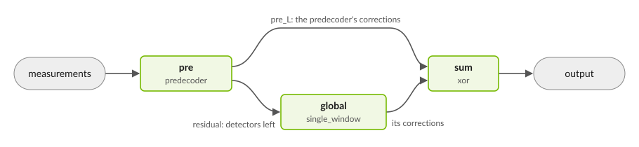

Decoding Task Graphs
A decoding task graph is a decoder pipeline. Measurements enter the graph, flow through its nodes, and leave as corrections to the logical observables, and, if the model reads them, as corrected logical measurements. A node decodes, often by wrapping a decoder plugin such as PyMatching, or combines results; edges carry values between nodes.

In this graph, a fast predecoder corrects the errors it is sure of and passes
the detectors it did not explain to a global decoder. Both correct the same
observables, so an xor adds their corrections.
A graph runs in two ways:
Complete shots:
run()decodes one shot andrun_batch()many, for offline analysis and testing.Streaming:
enqueue_syndrome()takes rounds as they arrive, and windows decode as soon as they hold enough rounds. This is the real-time QEC path.
Build a graph in Python or C++, or declare it in the task_graph block of a
decoder’s YAML configuration, which the realtime decoding server reads.
To decode streams of any length with windows that decode at the same time, see Task Graph Parallel Window. For orchestrating an ensemble of decoders, see Task Graph Decoder Ensembles. For execution details and other advanced topics, see Task Graph Reference.
Quick start: a sliding window
The simplest graph is one sliding-window node around an inner decoder. Its
model is a dem_chunks description of the experiment’s rounds (see
Dynamic DEM).
decoders:
- id: 0
task_graph:
nodes:
- id: sw
type: sliding_window
window_size: 3 # rounds per decode
step_size: 1 # rounds to advance per decode
inner: {type: single_error_lut}
dem_chunks:
seam: {from: next_round, to: prev_round}
connections:
- {from: init, to: bulk}
- {from: bulk, to: bulk} # bulk repeats
- {from: bulk, to: final}
phases:
- name: init
spec:
num_faults: 9
H_sparse: [0,1,5,-1, 1,2,6,-1, 2,3,7,-1, 3,4,8,-1]
O_sparse: [0,-1]
error_rates: [0.02,0.02,0.02,0.02,0.02,0.02,0.02,0.02,0.02]
- name: bulk
spec:
num_faults: 9
H_sparse: [0,1,5,-1, 1,2,6,-1, 2,3,7,-1, 3,4,8,-1]
O_sparse: [0,-1]
error_rates: [0.02,0.02,0.02,0.02,0.02,0.02,0.02,0.02,0.02]
- name: final
spec:
num_faults: 5
H_sparse: [0,1,-1, 1,2,-1, 2,3,-1, 3,4,-1]
O_sparse: [0,-1]
error_rates: [0.02,0.02,0.02,0.02,0.02]
The graph streams: it first decodes once it holds three rounds, then on every round after.
window_sizemust be at least the fewest rounds the phases allow, three here.For shots of a fixed length, set
dem_chunks.num_roundsand writetype: single_window: the graph decodes each complete shot once.inner’s other keys configure the inner decoder.
The same graph built in code. from_spec picks the window itself: the
fewest rounds the phases allow, advancing one round at a time, or the whole
shot when num_rounds is set:
# Build a single-decoder task graph from a dem_chunks_spec.
#
# When num_rounds is set the graph uses a fixed-T window that processes one
# complete shot per run() call. When num_rounds is absent and a repeating
# (bulk self-loop) phase exists, the graph uses a streaming sliding window.
# ---------------------------------------------------------------------------
# Fixed-T graph: processes one 5-round shot at a time.
fixed_spec = rep5_spec(num_rounds=5)
fixed_graph = qec.DecodingTaskGraph.from_spec(fixed_spec, "single_error_lut")
print(f"fixed-T msyn/decode: {fixed_graph.get_num_msyn_per_decode()}")
print(f"fixed-T observables: {fixed_graph.get_num_observables()}")
# Streaming graph: num_rounds absent — a 3-round window that moves one round
# at a time.
streaming_spec = rep5_spec()
streaming_spec.num_rounds = None # remove fixed round count
streaming_graph = qec.DecodingTaskGraph.from_spec(streaming_spec,
"single_error_lut")
print(f"streaming msyn/round: {streaming_graph.get_num_msyn_per_round()}")
print(f"streaming observables: {streaming_graph.get_num_observables()}")
// Build a single-decoder task graph from a dem_chunks_spec.
//
// When num_rounds is set the graph uses a fixed-T window (one call to run()
// per shot). When num_rounds is absent the graph uses a streaming window of
// the fewest rounds the phases allow, moving one round at a time.
// ---------------------------------------------------------------------------
static void example_from_spec() {
// Fixed-T graph: processes one 5-round shot at a time.
auto fixed_spec = rep5_spec(/*num_rounds=*/5);
auto fixed_graph =
decoding_task_graph::from_spec(fixed_spec, "single_error_lut");
std::cout << "fixed-T msyn/decode: "
<< fixed_graph->get_num_msyn_per_decode() << "\n";
std::cout << "fixed-T observables: " << fixed_graph->get_num_observables()
<< "\n";
// Streaming graph: num_rounds absent — a 3-round window that moves one
// round at a time.
auto streaming_spec = rep5_spec();
streaming_spec.num_rounds = std::nullopt;
auto streaming_graph =
decoding_task_graph::from_spec(streaming_spec, "single_error_lut");
std::cout << "streaming msyn/round: "
<< streaming_graph->get_num_msyn_per_round() << "\n";
std::cout << "streaming observables: "
<< streaming_graph->get_num_observables() << "\n";
}
Compile and run with
nvq++ -lcudaq-qec -lcudaq-qec-decoders decoding_task_graph.cpp
./a.out
Decoding complete shots
run() decodes one shot:
# One-shot execution: run() processes one complete shot and returns a
# LogicalOutcome. Does not touch the streaming accumulation buffer.
# ---------------------------------------------------------------------------
n = fixed_graph.get_num_msyn_per_decode()
m = qec.MeasurementResults()
m.bits = [0] * n # zero syndrome → no predicted errors
lo = fixed_graph.run(m)
print(f"converged: {lo.converged}, corrections: {list(lo.bits)}")
// One-shot execution: run() processes one complete shot and returns a
// logical_outcome. Does not touch the streaming accumulation buffer.
// ---------------------------------------------------------------------------
static void example_one_shot() {
auto graph = decoding_task_graph::from_spec(rep5_spec(5), "single_error_lut");
const std::size_t n = graph->get_num_msyn_per_decode();
measurement_results m;
m.bits.assign(n, 0); // zero syndrome → no predicted errors
logical_outcome lo = graph->run(m);
std::cout << "converged: " << lo.converged
<< ", corrections: " << static_cast<int>(lo.bits[0]) << "\n";
}
run_batch() decodes many:
# Batch execution: run_batch() processes a collection of complete shots.
# ---------------------------------------------------------------------------
batch_shot = qec.MeasurementResults()
batch_shot.bits = [0] * fixed_graph.get_num_msyn_per_decode()
shots = [batch_shot] * 8
results = fixed_graph.run_batch(shots)
print(f"batch results: {len(results)} shots processed")
// Batch execution: run_batch() processes a collection of complete shots.
// ---------------------------------------------------------------------------
static void example_batch() {
auto graph = decoding_task_graph::from_spec(rep5_spec(5), "single_error_lut");
measurement_results m;
m.bits.assign(graph->get_num_msyn_per_decode(), 0);
std::vector<measurement_results> shots(8, m);
auto results = graph->run_batch(shots);
std::cout << "batch results: " << results.size() << " shots processed\n";
}
A graph with more than one output returns one result per output from
run_all, in output_names() order.
Streaming
# Stream a 10-round shot one round per call, tagging the last round FINAL.
# ---------------------------------------------------------------------------
graph = qec.DecodingTaskGraph.from_spec(streaming_spec, "single_error_lut")
per_round = graph.get_num_msyn_per_round()
num_rounds = 10
for round_idx in range(num_rounds):
syndrome = bytes(per_round) # zero syndrome: no errors
if round_idx < num_rounds - 1:
graph.enqueue_syndrome(syndrome)
else:
graph.enqueue_syndrome(syndrome, qec.round_type.FINAL)
progress = graph.streaming_result().outputs[0]
print(f"status: {progress.status}")
print(f"corrections: {list(graph.get_obs_corrections())}")
# Start the next shot.
graph.clear_corrections()
// Stream a 10-round shot one round per call, tagging the last round FINAL.
// ---------------------------------------------------------------------------
static void example_streaming() {
auto streaming_spec = rep5_spec();
streaming_spec.num_rounds = std::nullopt;
auto graph =
decoding_task_graph::from_spec(streaming_spec, "single_error_lut");
const std::size_t per_round = graph->get_num_msyn_per_round();
const std::size_t num_rounds = 10;
const std::vector<uint8_t> syndrome(per_round, 0); // no errors
for (std::size_t r = 0; r < num_rounds; ++r)
graph->enqueue_syndrome(syndrome.data(), per_round,
r + 1 < num_rounds ? round_type::BULK
: round_type::FINAL);
const auto progress = graph->streaming_result().outputs.at(0);
std::cout << "complete: "
<< (progress.status == task_graph_streaming_status::complete)
<< "\n";
std::cout << "corrections[0]: "
<< static_cast<int>(graph->get_obs_corrections()[0]) << "\n";
// Start the next shot.
graph->clear_corrections();
}
Send one round per call:
get_num_msyn_per_round()measurements. Larger chunks also work; the graph splits them.Tag the shot’s last round
FINAL, as inenqueue_syndrome(syndrome, round_type.FINAL). It decodes whatever windows still hold, so the end of the shot is corrected. Untagged rounds never end a shot.Corrections accumulate across the shot. After
FINAL, the graph drops further rounds untilclear_corrections(), which consumes the corrections and starts the next shot.reset_decoder()also starts a new shot, discarding rounds not yet decoded.
Reading results
get_obs_corrections() returns the corrections, one byte per observable.
streaming_result() also says whether they are ready and which rounds they
cover. For each graph output it reports:
status:PENDINGbefore the output has published or afterclear_corrections(),AVAILABLEmid-shot,COMPLETEafterFINAL, orFAILED. (In C++, lowercase.)coverage_begin_roundandcoverage_end_round: the rounds the latest update committed, as a half-open range. For a parallel window, this is every round committed since the lastclear_corrections().closure: whether decoded windows were checked against their detectors (see Task Graph Parallel Window).
A zero correction with status AVAILABLE is a real result. Synchronously,
enqueue_syndrome also returns whether any node decoded; with
async_streaming, an untagged call returns False, so read status
instead.
Logical measurements
A graph can return two results:
Corrections, the flips of the logical observables:
get_obs_corrections(),run()and the decoding server’sget_corrections.Logical measurements, the raw logical readout with the corrections applied:
get_logical_measurements()and the server’sget_logical_measurements.
Logical measurements need a model that reads the observables, through
m2o_sparse (see Dynamic DEM), and a graph with a logical
output. parallel_window wires one with
output: corrections_and_logical (see Task Graph Parallel Window);
other graphs wire a logical_readout node (see
Logical outputs).
A logical measurement is released once its readout has arrived and every correction that can flip it is committed. A final readout is released at
FINAL. A mid-circuit readout is released mid-shot when the corrections are staged, asparallel_window’s are; otherwise atFINAL.get_logical_measurements(first, count)returnsNone(C++:nullptr) until every measurement in the range is released, and again once the shot is consumed.The logical output is the last of
streaming_result().outputs, with areleasedflag per measurement. It is not inoutput_names(), andget_num_logical_measurements()gives its width.The logical measurements apply every correction of the shot, so the shot can be consumed only after
FINAL:clear_corrections()raises before then.reset_decoder()still abandons a shot.runandrun_batchreturn corrections only.
Graphs of several nodes
task_graph.nodes lists the nodes and task_graph.edges wires them. A
node names its kind in type, its inner decoder in inner, and the kind’s
parameters inline. This is the graph in the figure above, on the quick
start’s model:
task_graph:
nodes:
- id: pre
type: predecoder
window_size: 5
residual_from: parity_check # inner returns the errors it found
inner: {type: single_error_lut}
- id: global
type: single_window
window_size: 5
inner: {type: multi_error_lut, lut_error_depth: 2}
- id: sum
type: xor
edges:
- {from: measurements, to: pre}
- {from: pre.pre_L, to: sum.a} # the predecoder's corrections
- {from: pre.residual, to: global} # the detectors it left
- {from: global, to: sum.b} # the global decoder's corrections
- {from: sum, to: output}
measurementsis the incoming shot andoutputthe graph’s result.An edge endpoint is a node id, with
.portfor a node that has named ports, such asxor’saandbandpredecoder’spre_L(its corrections) andresidual.A node fed by another decodes that node’s output, so
preandglobaldecode the same rounds: theirwindow_sizemust match.A single node needs no edges: it is wired
measurements → node → output.List nodes in the order data flows. A node without its own
dem_chunksuses the decoder’s.
combine() joins two single-node graphs
with an xor, for two decoders whose corrections add:
# combine() runs two independent decoders and XORs their logical outcomes.
# Each branch applies its own D matrix; they may decode the same DEM with
# different algorithms. Both input graphs are consumed by the call.
# In streaming mode, enqueue_syndrome routes the syndrome to both branches
# simultaneously.
# ---------------------------------------------------------------------------
left = qec.DecodingTaskGraph.from_spec(rep5_spec(5), "single_error_lut")
right = qec.DecodingTaskGraph.from_spec(rep5_spec(5), "single_error_lut")
combined = qec.DecodingTaskGraph.combine(left, right)
print(f"combined observables: {combined.get_num_observables()}")
# Batch: run() walks both branches and XORs the results.
n = combined.get_num_msyn_per_decode()
m = qec.MeasurementResults()
m.bits = [0] * n
lo = combined.run(m)
print(f"combined corrections: {list(lo.bits)}") # XOR of identical results = 0
# Streaming: both branches receive the same syndrome bytes.
fired = combined.enqueue_syndrome(bytes(n))
if fired:
corr = combined.get_obs_corrections()
print(f"combined streaming corrections: {list(corr)}")
// combine() runs two independent decoders and XORs their logical outcomes.
// Each branch applies its own D matrix. Both input graphs are consumed.
// In streaming mode, enqueue_syndrome routes the syndrome to both branches
// simultaneously.
// ---------------------------------------------------------------------------
static void example_combine() {
auto left = decoding_task_graph::from_spec(rep5_spec(5), "single_error_lut");
auto right = decoding_task_graph::from_spec(rep5_spec(5), "single_error_lut");
auto combined =
decoding_task_graph::combine(std::move(left), std::move(right));
std::cout << "combined observables: " << combined->get_num_observables()
<< "\n";
// Batch: run() walks both branches and XORs the results.
const std::size_t n = combined->get_num_msyn_per_decode();
measurement_results m;
m.bits.assign(n, 0);
logical_outcome lo = combined->run(m);
std::cout << "combined corrections: " << static_cast<int>(lo.bits[0])
<< "\n"; // XOR of identical = 0
// Streaming: both branches receive the same syndrome bytes.
const std::vector<uint8_t> zero_syndrome(n, 0);
if (combined->enqueue_syndrome(zero_syndrome.data(), n)) {
const uint8_t *corr = combined->get_obs_corrections();
std::cout << "combined streaming corrections: " << static_cast<int>(corr[0])
<< "\n";
}
}
For any other topology, use
from_topology() with a list of
TaskGraphNodeConfig nodes and their edges. In code, a
node’s kind, decoder_type, params and node_params hold what
YAML writes as type, inner.type, inner’s other keys and the
inline parameters.
Node kinds
Kind |
What it does |
|---|---|
|
Decodes |
|
Decodes a complete fixed-length shot. |
|
Passes each round to an inner decoder that streams natively. |
|
Decodes streams of any length in windows that decode at the same time. See Task Graph Parallel Window. |
|
The nodes |
|
XORs its inputs: ports |
|
Reads the raw logical value through the model’s |
|
Runs a predecoder and passes its residual detectors on through its
|
|
Runs several member graphs and keeps one answer. See Task Graph Decoder Ensembles. |
Kinds are a registry, so plugins can add more.
registered_task_graph_node_kinds() lists an installation’s kinds,
decoder_param_schema("task_graph_node.<kind>") describes a kind’s
parameters, and decoder_config_json_schema() returns a JSON Schema for
checking configurations with your own tools.
Guarded sliding windows
Overlapping windows see each round more than once. Guard rounds are context only: the window decodes with them but does not correct them, because a neighboring window does.
- id: sw
type: sliding_window
window_size: 5
step_size: 4
end_guard: 1 # the last round is context only
inner: {type: single_error_lut}
start_guardandend_guard(orguard_roundsfor both) set the guards.With a guard,
step_sizemust equalwindow_size - start_guard - end_guard, so each round is corrected exactly once.The
FINALround corrects the last window’send_guard.
Asynchronous streaming
By default, enqueue_syndrome returns after the decodes it starts. With
async_streaming, it copies the round and returns, and the graph decodes on
its own worker threads; it waits only when the graph’s queue is full. Reads
(get_obs_corrections, streaming_result) wait for rounds already sent,
and a FINAL round returns once the whole shot is decoded.
task_graph:
async_streaming: true
async_num_workers: 4 # worker threads; default: sized to the graph
async_worker_cpus: [4, 5, 6, 7]
nodes: [...]
In Python and C++, set the same fields on TaskGraphOptions
and pass it when building the graph. max_in_flight on a node
such as decode_window lets that many of its decodes run at once. The
reference lists every option: Asynchronous streaming options.